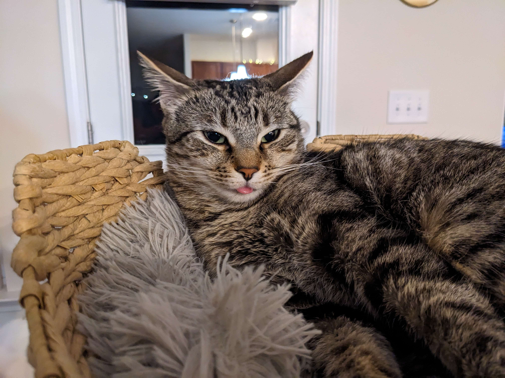
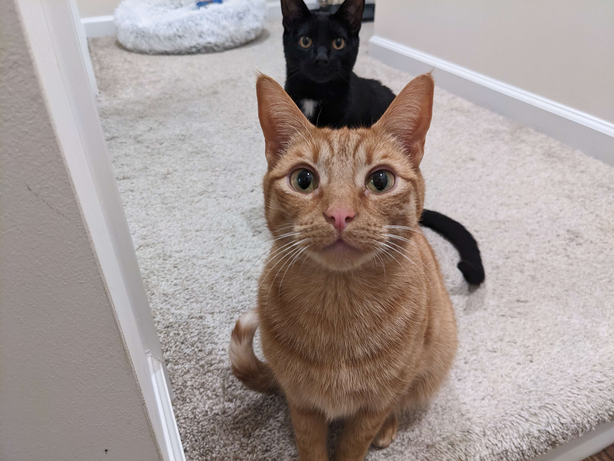

I am an avid gamer. I enjoy a wide range of games, both physcial and digital. While many will complain that the tabletop games that I play are too complex, I believe that the more strategic the game, the better. The hardest part is finding like minded people to play with. On the digital front I don't stick to one particular genre but I tend to prefer role-playing games. Recently I've started hosting Virtual Dungeons and Dragons campaigns that is an interesting fusion of both physical tabletop and digital gaming.
I have three cats that are always demanding attention and enjoy spending time with them, even when they're knocking things off the counters or tripping you up the stairs.
 I also enjoy reading sci-fi and fantasy novels, but you probably could have guessed that from my gaming interests. I highly recommend the Safehold series by David Weber, it has an interesting blend of futuristic and historical themes.